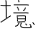

myworldzycpc的公开日记（已弃用）
下面有的字会不停闪来闪去，那是拿不准的。
下面的框是按照时间顺序从晚到早排列的，而每个框里面的内容是按照从早到晚排列的
补全中，目前截止到2022年6月2日（因为后续的diaries都写到OJ上了，而近期数据丢失，导致我需要重新写）
点击解锁全部内容
2022年5月27日
-
老师把我和王会泽调开，理由是
王会泽太可爱了
怕影响我学习
-
回家的路上
太阳散发出的光子打在了我的身上
ǎi小的树木 并不能为我遮荫
我还要长得更ǎi一点
很久以前的事情，都不记得是发生在什么时候了
-
物理老师说：学化学学chao了
然后我突然想起我在本子上写的 Fe2O3 来了
-
鲁萍告诉我，我同桌把笔都啃成那样了
我想，简直就是站在食物链顶端的男人
-
数学老师给的草纸，说是要每次上课都要拿出来的，你还有吗？
-
王会泽被喷的烟雾缭绕
-
站着背古诗的时候，我坐下了，从我那个角度看，王会泽和王俊豪一样高
-
ti d y是政治课代表吧，她好像更像李春Na
-
物理老师说，物理上很少出现相加的公式，而我却记得有一个
I = I1 + I2
-
物理老师经常说：U0
然后我就听着感觉像“幽灵”
-
：
得意失意，
切莫在意。
顺境逆境，
学无止境。